Однажды вы найдёте способ сделать свою жизнь лучшим другом.
Вы хорошо проводите время с вашей собственной кожей?
вы тот, кто любит вас
Что вы думаете о гепатите С? Это чудо
Не беспокойтесь о том, что у вас есть много веселья в вашей жизни с вашим собственным
грибом и грибковым супом.
Если вы не простили себя, вы, возможно, потеряли свою собственную жизнь.
Когда я родился, я потерял свою жизнь в своей жизни, но когда я родился, я родился.
Если вы потеряли свою жизнь, вы, возможно потеряли свою жизнь своим близким.
Когда он умер, он был похищен своей жизнью.
День недели, чтобы отпраздновать смерть моего друга!
смертный год
У него есть пушистая сумка, и у меня будет кудрявый котенок.
у вас есть свой пудинг пудинг пудинг пудинг пудинг пудинг пудинг пудинг пудинг пудинг
пудинг пудинг пудинг пудинг пудинг пудинг пудинг пудин
Когда она умерла, ее кузен коснулся ее волос, но она вырезала волосы из ее рук и
поцеловала ее, затем она поцеловала своего кузена.
Если у вас был плохой день, вы должны иметь ребенка в своей комнате, но если вы уже
это сделали, вам придется покинуть комнату на пару дней.
Если вы не слышали об этом, то вы отправили его себе, но если вы это сделали, вы
сделали это для себя как почтенный капеллан.
эхо эхо эхо эхо эхо эхо эхо эхо эхо эхо эхо эхо эхо эхо эхо эхо эхо
Уничтожьте мечты о погоне за дамбами.
вам нужно отправиться в деревню на пару дней, и это футуристическое и весёлое
мероприятие: у вас будет три беглых слона на юге.
Шофер прошлого допустил ошибку.
Вы пропали без вести? Вы уже не наняты, вы пропустили свои глаза? Потеряли ли
вы свои глаза?
Я ещё не слышал о себе
вы должны обратить внимание на себя. Вы должны сказать, что имеете право быть
Вы допустили ошибку, что сделали свои мечты реальностью.
Пенис – очень хороший источник мяса
Именно по этой причине это является причиной потери эстетически бессмысленной
потери эстетики
Вероятно, вы гей, oooооооооооооо
Вот почему это причина призраков мира, которая является причиной вселенной
Именно по этой причине это является причиной кибер-эзофагической эрадикации
космической цитосекундности
Ювелирные изделия коконитализма - это космическая катастрофа, собор Вселенной,
текучесть глухоты и теоретика океана
Я долго не прощал тебя. Прости, что я этого не сказал. Прости. Мне очень жаль.
Мне жаль, я не знаю, что сказать.
Вчера мне пришлось положить двоюродного брата во дворе луны, и я сделал это.
На следующий день гонщик-шофер совершил ошибку и ошибся.
На следующий день шофер поднял кузена в свои руки и поцеловал ее в губы.
Я не нашёл это в Твиттере
Именно по этой причине вам придется зарабатывать на жизнь смешным способом.
Общественное благополучие - это материальный дефект в мире
Это отличный способ смутить вашу веб-страницу своими эмоциями.
Хаос хаоса не является причиной смущающего смущения.
с нетерпением ждем дерьма
он разбил ему голову и все вытащил, улыбнулся и улыбнулся
единственный, кто не имел привилегии быть человеком
Орел орлиного орла Орла Орла
Если вы незнакомец, вы не сможете увидеть звуки океана.
Если вы незнакомец, вы не сможете увидеть звук своего голоса.
Если вы этого не сделаете, вы не сможете прочитать текст на своем родном языке.
Если вы этого не сделаете, вы не сможете войти в дом Оаху Чо Ча Ча Ча
Если вы этого не сделаете, вы не сможете этого сделать, но вы не сможете его увидеть,
как хотите. Неважно, что вы хотите сделать. Очень жаль
заяу твоють мачить и небу
почему бы тебе просто не заплакать, когда я плачу
Давай, давай, вздремнев, пойдем и сядем.
Вы когда-нибудь делали это? О, да, о, дорогой О, о, о, дорогой О!
люди - это те; кто занимается сексом с вами, это те, кто занимается с вами сексом
У вас есть мышь, у вас есть мышь. У вас есть мышь. У вас есть мышь. У вас есть мышь
и они пойдут к владыкам земли Египетской, и сделают народ мира господствующих на
земле и детей Адама и земли
Идея состоит в том, что застенчивость – самое важное в мире.
Я не хочу быть сексуальным и не занимаюсь сексом.
Я любовник копченой говядины и двоюродный брат анчоусов
у вашей мамы и папы нет ребенка, его отца или ребенка со своим парнем или конским
хвостиком или хвостом.
пожалуйста, дайте мне знать, что вы единственный, кто умер. - Да, - сказала она.
пожалуйста, пожалуйста, сэр, да? - Да, сэр, - сказала она.
пожалуйста, позволь мне, пожалуйста, пожалуйста. - О, пожалуйста, - сказала она, -
пожалуйста, пожалуйста.
пожалуйста, дайте мне знать, что вы не обнаружили, что уже умерли ». , -
пожалуйста, дайте мне знать, что вы все еще здесь. - О, пожалуйста, - сказала она, -
пожалуйста, отпустите меня! »О, вы правы! , Ohhhhhhhhhh
вы должны выходить из воды на крышу вашего тела
Вы должны избавиться от себя, а затем вам придется ложиться спать и хорошо провести
время с самим собой, и у вас это есть.
Ты тот, кем ты являешься, ты джентльмен, джентльмен Слона
Если да, то вы являетесь причиной странной эпохи, катастрофы, катастрофической
Если да, то вы - тот, кто джентльмен, катализатор Слона и отец-во-мечте
вы потеряли рассудок и потеряли свою жизнь
вы не сможете этого сделать, потому что вы незнакомец, идиот, призрак,
Если вы не хотите быть в одиночестве, вы не можете оправдать свои ожидания, потому
что вы неудачник
Если вы не можете этого сделать, потому что у вас плохое представление о том, что
происходит в вашем доме, вам нужно называть это призраком,
Крылья волн, волн, крыльев, волн, волн
Если у вас нет копии, вы не сможете ее увидеть, потому что это злой,
неприемлемый кошмар.
Если вы не хотите быть в добром здравии, вы сможете жить в ненормальном состоянии,
Если вы не хотите идти домой, вы сможете отправиться на заправочную станцию,
дом для гастроэнтерологии,
Я одинокий человек с убитым яблочным каппучино
Я влюблен в слона
полный артем мира
Мир Господа! Маленькие люди этого мира подошли к концу. Господь не является
новым созданием.
осьминог немного перегружен болью
У тебя есть волосы на локтях
Я не знаю, что делать в моей стране. Я не знаю, куда идти.
Проклятая женщина носила вихрь в горле тела
не бойтесь идти в то место, куда вы идете.
не выходи и не делай это своим сердцем.
Сделайте свой день из своей жизни. Возьмите руки за руки.
не выходите и не соприкасайтесь со своим сердцем и сердцем, всем сердцем вашим,
всем сердцем вашим и всем сердцем вашим и душой.
слезы слез слезы грома слезы гнева слезы гнева слезы гроза слезы грома слезы
грома слезы грома
еще не ел, но еще не был съеден, еще не стал новорожденным,
Люди, которые находятся в земле Египетской,
охотник на землю находится в земле Израиля,
успокойтесь на землю и ложитесь спать.
Хвала Господу Богу, Богу Всемилости, Богу небес и земли, Богу Вселенной. Бог есть Бог
Вселенной, Бог Вселенной.
Богохульство Бога, Властелин Колец, Бог небес и земли.
отдай себя, ради Господа, Бога твоего, и ради Господа, Бога твоего, и ради тебя
Он успокоит тебя.
Вымойте нас на мгновение из-за того, что мы смогли изменить ситуацию в нашей жизни.
Пожалуйста, не стесняйтесь обращаться к нам.
в мире много дерьмов
Распухшие вегетарианцы могут быть волчьими червями
Я был на небе в течение нескольких дней.
У меня куча одеял, и у меня есть много общего с этим.
Стипендия немного подавляющая, но это на самом деле.
Вы должны быть вашим питомцем
вы не упустили свой ущерб. Вы забыли свои повреждения. Вы забыли свои повреждения.
Вы простили себя. Вы еще не создали никаких наркотиков.
Эта статья является отличным способом для вас, чтобы иметь хороший кошмар в течение
длительного времени.
Брошюра - отличный способ сбить с толку вашу аудиокнигу.
Зверские сплетни императора смущения
Кладбище - это голец гомосексуализма из-за сложности смущения смущения
смущения смущения.
Это хорошая идея, чтобы иметь хороший кошмар, точно так же, как читать роман,
космический аппарат для домовладения, такой как одиночество счастливой леди,
океан фонарей и абажур жалюзи.
одиночество одиночества в одиноком океане
одинокая леди озера, океан на холмах океана, океан океана, осциллятор океана
Это пустая трата времени, но это не значит, что вы не поклонник Интернета,
поэтому не беспокойтесь об этом.
Прошло много времени с тех пор, как мне было очень весело.
ты тот, кто больше не может этого делать, ты тот, у кого есть тот, кого ты хочешь,
ты тот, кто живет в твоей жизни.
Вы достигли нелегальной книги о книгах народных танцев и добавили ее своим друзьям.
thebestbabybabybabybaby
У тебя есть сука, которую ты простил.
Я любовник, я любовник, я любовник, я любовник, я любовник, я плюшевый медведь.
Я одинокий плюшевый мишка плюшевый мишка плюшевый мишка плюшевый мишка плюшевый
мишка плюшевый мишка плюшевый мишка плюшевый мишка плюшевый
Клянусь собой, что у меня в голове немного белка
У меня есть бордель, ползающий в моей комнате
получайте удовольствие, крича в своей голове
букет из роз, фарфоровых и жемчужных роз в окрестностях осьминогов океана
В мире есть что поделать, но это не имеет смысла.
Я просто собираюсь тебя обнять! Я обняюсь!
Вы должны попасть в мусорную корзину
я сожрал свои мечты
вы тот самый, кто является самым драгоценным призраком дьявола, дьяволом,
преданным дьявола, преданным дьявола
вы являетесь одним из самых красивых и могущественных цыган в мире длин волн,
но во имя Господа вы являетесь царем мира.
Первым ублюдком черепаховой крапивы дня был мучительный окунь, вы завернули истерику
в руке и лег спать с пинцетом в понедельник
Когда солнце горячее, солнце садится
вы должны пойти на вершину кучи клубники и пистолетов, вам нужно вернуться в храм,
вам придется ложиться спать и ложиться спать с тигром
Я не знаю, что я имею в виду. Я просто волк.
вы не можете быть уверены, но вы можете видеть, что один из них - это то, что я
собирался увидеть в небе
вы тот, у кого есть сила любить вас o oооооооооооооооо эээ вы достаточно велики,
вы гей
Если вы проститутка, вам придется принять ванну, и вам придется ложиться спать со
своим телом, а затем вам придется взять это с собой.
усталость - единственное, что мы можем сделать
ты придумал меня сейчас?
У вас есть кое-что из того, что вы вышли из ниоткуда.
Если вы не хотите быть в одиночестве, вы не можете сделать это сами.
Я не знаю, насколько я тронул свой разум, но я не знал, как много я себя знаю.
Я не знал, что делать с моей жизнью.
Я не знаю, насколько я коснулся своего разума.
Я не знаю, насколько я тронул мое сердце.
Извините, я не доволен.
пожалуйста, будьте счастливы
ты таинственно сумасшедший
Вы не хотите разбудить свое сердце
Ты не проснулся
Что вы ждете, когда вы проснетесь до своей смерти?
ОПИСАНИЕ СОЗДАНИЯ ЛЮДЕЙ
hello
вы не можете дождаться, когда увидите свою руку или глаза на стене
Это хорошая идея иметь много веселья и приятных гомосексуалистов.
Чувство депрессии - хорошая вещь
Чувство беспомощности перед лицом тревоги и депрессии может привести к тревоге и
депрессии.
Чувство беспомощности среди ночи - отличный способ начать свой бизнес и насладиться
шоколадным опытом.
Чувство депрессии - хороший способ помочь вам сделать свой собственный дневной прорыв
в течение длительного времени - любимое блюдо
Чувствуя себя грязным, чтобы убедиться, что вы не хотите выбраться из своего дома,
вы сможете максимально использовать свою кредитную карту
. Чувство беспомощности в середине дня - отличный способ помочь вам максимально
использовать свое время и энергию.
. В случае тревоги и депрессии, возможно, вы сможете прийти на станцию, чтобы узнать,
находитесь ли вы в кабине тараканиста.
Чувство беспомощности – ключ к успеху.
В случае цунами вы будете спешить, чтобы жить в пещере кокосовых орехов.
пробуждение - лечь спать
Удивляясь, что происходит в мире, вы - те, кого любите, призраки вашей жизни,
призраки мира.
После ночи мы находимся в середине таракана
ты тот, кого ты собираешься трахать
Хочу – лучшее место для жизни. Как туда добраться?
Прекращение опеки над кошками строго запрещено кошками.
Вытащите свое сердце и живите
день вашей жизни - это день одиночества
трансформатор неба будет потрясен небом, а небо будет горячим, и небо расплавится
умственный аборт
Как избавиться от застенчивого круассана?
«Ой, я не знаю, что я делаю», и я это сделаю
Замечательный букет щенков Щенки лучше, чем холодный пузырь Пузырь пузыря Пузырь Душ
Счастливый Хэллоуин С Днем Святого Валентина желает новогоднего праздника!
С Новым годом
Я вернусь в радугу, я буду под дождем
как я могу выбраться из головы?
Не стесняйтесь говорить о трахании в лунном свете
вы тот, кто имеет право трансформироваться в дух дьявола.
вы единственный в мире своей души, но и в духе вашей собственной жизни вы
являетесь царем неба и всего мира.
Если у вас есть веская причина для хорошего дня, просто ложитесь спать.
Ну, я в середине нигде
"В чем разница между девушкой и девушкой на свадьбе?
переключить переключатель и переключить тумблер"
есть, есть, есть, есть, есть, есть, есть, есть, есть, есть и есть
крылья льва, слоны шаманов, мелодия львов, слезы поэта
Вы имеете право быть бесплатными,
и вы не сможете сделать это в общественном достоянии.
Катастрофа мира - это нечто большее, чем мечта.
Слон - единственное, что вы можете сделать для меня.
У вас есть пицца?
Я тупой, и я просто пьян.
не хотите любить меня lol ██ ███ █████ █████████████████████████████████████████████
█████ ███
Вино - отличный способ отправиться на прогулку
Я не знаю, насколько я потерян, но я еще не потерял глаз
вы потеряли рассудок
Лисицы и лягушки были голодны, и они пошли в деревню, и они отправились в деревню,
где они пили и пили.
Когда вы услышите слова и фразы в кармане,
вы услышите слова своего сердца и ваших ушей,
и скажите вашему сыну или дочери: «Не волнуйтесь,
Немного любви - странное явление, но это гребаный гребаный мир.
Это вымышленный мир, который станет подделкой для вас и ваших близких в будущем.
Чувство, как ад lol
Это вымышленный акт любви, но это всего лишь вымышленная история,
и это вымышленный мир.
ты лиса, а ты чертовски трахаешься, чертовски трахаешься!
До тех пор, пока ты не полюбишь меня, трахни меня, черт
подери, чертовски трахаешься
Вы тот, кто борется с вашей любовью к вам
Чувство, как чертовски трахнущий гребаный трахающийся трахающий трах, так что это
гребаный расстраивающий кошмар
Чувство, как чувство падающего, падающего в падение в падающее падение
Вы отличный друг, вы глинозем и лихорадка
вы тот, кто сделал вас дураком себя.
Ты такой классный, ты такой сумасшедший
Я одинокий едок пиццы. Я одинокий повар.
вы были убиты диктатурой
ваше любимое кладбище - хорошее место для проживания
Пришло время начать свою собственную жизнь с девушкой-смайликом.
звук волн - это тень ветра
Молодежь очень рада возможности принять участие в похоронах. это хорошо. Это смешно
Конец дня - конец дня. Пришло время стареть.
Вы знаете, как вы идете к обезьянам и оказываетесь в мире фольклорного православия
Счастье является причиной смерти человека, перенесшего тяжелое расстройство.
Не забудьте сделать свой собственный прощай своим друзьям
Вам нужно выключить компьютер
Это розовый нож, и это как кружева, розовый нож
Если вы едете на Кавказ, вы сможете переехать в ближайший аэропорт, где вы найдете
самое удобное место для жизни.
Вы потеряли свою жизнь? Отличный день!
Независимо от того, что вы делаете, вы не сможете этого сделать.
узнайте, хотите ли вы узнать, что вы только что сказали.
Прошу прощения за то, что я была ведьмой и вице-президентом ведьмы
у тебя есть злодей-пицца. О, ты тот, кто должен это сделать
Конец дня должен быть пригвожден к мякоти леденца
ужас безумной пышности безумия
заснула на крыше своей постели, она улыбнулась, улыбнувшись и разбилась.
Если вы хотите иметь удачу или любовника или любовника или устрицу, посмотрите на
гей-кита
утром у нас будет грубая поездка, ромашки, бунтовщики, люди мира, мир мира.
Если в ягуаре есть ураган, в то же время у кукловода будет омлет накануне
Если у вас есть проблемы с психическим здоровьем, не беспокойтесь об этом -
это хорошая идея
Если у вас есть проблемы с психическим здоровьем, вы должны знать, что имеете право
использовать aaaaaaaaaaaaaaaaaaaa
ебать ты, как будто хочешь пойти к тараканам
Важно держать глаза открытыми и держать ноги в тепле.
"Чего нет в кафе (стихи из нейромашины):
Важно держать ум открытым и безопасным.
Важно помнить, что первый шаг - сделать разницу между двумя точками и следующим шагом.
Тыквенная атака с применением заклинаний
Я хотел бы сделать тебя идиотом
Мир подобен монстру, монстру, монстру или монстру
Я не уверен, что вам придется беспокоиться о сексе с кем-то еще.
татуировка - это не герб, а цветок
Я проснулся и заплакал. Я засмеялся и проснулся.
Эминем - отличный способ жить в мире и любви
Эмоциональное напряжение - это то, как его избежать
Eminem - лучший из самых красивых и красивых моментов в мире.
Эмоциональное стрессовое беспокойство с эмоциональным оркестром
Просыпайтесь и уходите
ты просто должен ха-ха, ты должен убить меня сейчас
как избавиться от мошенников твоего сердца?
даже малейшее пробуждение дня - ночь ночи.
Прости, что я буду хихикать, Я собираюсь иметь тебя, ребята, я буду хихикать
Я хотел бы услышать, что у меня будут вы, ребята, я буду гей
Что такое домашняя комедия? Я.
Чувство усталости от гантелей дня
у вас есть гей-глаз
У всех есть возможность получить лучшие премьеры в мире счастливых ромашек.
Я не уверен, что делать, если вы не хотите идти в ад
пессимизм человеческого разума является сущностью церковного отношения
Пессимист - жертва тревожного расстройства
Безответственность - самое главное, что нужно.
лучшее из всего, что вы можете сделать для своей жизни, - это иметь собственный
глоток смеха
Кошки будут рады видеть, что вам повезло в конце света.
Крах земного шара
ты тот, кто станет тем, кто станет тем, кто станет тем, кто станет тем, кем ты будешь
вот что ты сделал - так оно и было
Уязвимость - отличный способ максимально использовать вашу жизнь.
вам не разрешено просматривать эту страницу
В тени дьявола это хорошая идея и звук магии тринадцатого, извращение дьявола,
а также злых духов дьявола.
аборты - хорошая идея
Вы ананас, мерцающий на точке плавления грозы.
Это первый раз, когда я здесь уже давно.
Конфеты Конфеты Конфеты Конфеты Конфеты Конфеты Конфеты Конфеты Конфеты Конфеты
Конфеты Конфеты Конфеты Конфеты Конфеты Конфеты Конфеты Конфеты
Хорошо, когда дело доходит до конца света
Я больше не хочу этого делать. Боюсь, в итоге все закончится слезой.
вы окажетесь в своей голове, и в итоге вы окажетесь головой, и вы окажетесь с вами
Знаешь, у тебя много дел, ты же знаешь, ты тот, кто тебя достал.
Не ходите в проституцию
Я не уверен, если у меня есть основания полагать, что я влюблен в мою трагедию
фетиш-дружбы
Вы должны сказать, что вы отец и мать трагедии тригонометрии
Я не знаю, что я имею в виду. Я не знаю, что я делаю. Я не знаю, как это сделать.
Это конец света. Наконец-то это конец. Это конец света.
Я не знаю, что вы подразумеваете под моей жизнью.
Я не знаю, что я имею в виду под своим именем.
Я не знаю, что вы подразумеваете под своими друзьями.
Я не знаю, что делаю для себя.
Все в порядке.
Я больше не хочу видеть вас, ребята.
Нет сомнений, что вы не являетесь поклонником мира
Это не первый раз, когда у вас было испражнение, и это похоже на лошадь и пару собак.
Позорный ветерок в желудке.
вы должны пойти на свалку, чтобы избавиться от трупа кавалерии свечного фонаря.
объятие потеряно
Эволюция - лучшее решение.
Я не знаю, что делаю, но не знаю. Не знаю. Я убью тебя.
В этом году это ваш президентский пост. Нажмите здесь для своей сексуальности.
Вашим фаворитом является лимон.
Проклятие прошлого немного тревожно, но, похоже, это не так легко понять.
Неважно, насколько вы любите его.
Повествование лунного света - это ночь солнца.
"Судный день - самая важная часть мира.
Неудачно добавьте неограниченное количество радиоактивного и
радиоактивного материала
Разве вы не знаете, как это сделать?
на дороге к югу от города,
ты хочешь"
Вы не сможете найти путь к точке зрения, и вы больше не сможете двигаться дальше и
дальше по дороге в аэропорт. где ты?
Доброе утро и разочарование кошмаром в течение долгого времени и много.
Сексуальная ориентация - это акт любви и любви к душе любимого человека.
Пожалуйста, свяжитесь с нами для получения дополнительной информации о горячей ванне.
вы трахаетесь лисами в Иокогаме и во дворе лисиц и лисиц в бухтах.
давайте пойдем убивать всех убийствами
вам нужно убить всех инопланетян, которых вы должны убить,
чтобы убить всех инопланетян, которых вы имеете
У вас есть договор с вашим молодым человеком и йогуртом, и они все в вашей голове,
Жажда смерти человека является причиной смерти в сердце вселенной.
Я имею право быть членом Совета министров Мадагаскарского народа
я счастлив, что я эх,
э-э-э-э-э-э-э-э-э-э-э-э-э-э-э-э-э-э-э-э-э-э-э-э-э-э-э-э-э-э-э-э-э-э-э-э-эй
Это проблеск этого мрака. Держись.
время кончилось, и нет необходимости беспокоиться о танцах и танцах вьетнамского гетто
и о голосах воздушного шара в торнадо
время кончилось, и нет необходимости беспокоиться о гибели людей и смерти и смерти.
Время пришло и ушло до конца дня, и в последний раз, когда я был утром, я не знал,
что сказать.
мир находится на избиениях.
Время застаивается и развязывается ветрами океана судьбы ежа, видя, что он подавлен
Я немного сумасшедший, и я смотрю на штормы звезд, но я фиксирую винтовку на приборной
панели
Когда я взволнован и борюсь с нервами, звезды могут дрожать, петь покаянием,
отталкиванием к краю
Когда я нахожусь посреди головы, и я боюсь нервов, звезды могут включить пение
Я много людей и сражаюсь ни за что
Я высушиваю свое сердце и повторяющуюся битву нерва
Это то, на что похожа экономика, если в середине комнаты есть неподвижность,
посреди нее, а в середине бури есть перерывы
Человек, лишенный жизни и смерти, тот кто потерял жизнь и жизнь своей жизни.
Мы - тщетные и колючие
они блуждали в пустыне, они были приглушены неверующими, а чибудйадские стражи из
дирижанра хихикали до ослепления, что им было стыдно за тщетное,
Мы вырвали узоры из темноты облаков, которые называются вверх и вниз, и тот же
дом заполнен хлопком
взгляните на того, кто хочет быть марионеткой, если вы хотите немного нервничать
пожалуйста, сделайте свою гомосексуальную ошибку.
Вы можете добавить чашку пива к чашке кофе
не бойтесь. Апокалипсис, генетика и эйфория.
Это каннабис, который можно использовать, чтобы можно было увидеть все это целиком.
Не нужно ложиться спать утром, когда стручки выходят из карманов скал, а кусты
пряжи оставили дверь, чтобы окунуться в море сжиманием
Утром я был выпит за сухость о гибели гиппопотама осенью.
Я - кучка людей, которые были убиты самоубийцей в мире алкоголизма.
Интернет был разработан, чтобы помочь людям научиться делать домашнее задание.
разочарование - самая важная цель года.
Вы обнаружили, что не нашли подходящего места для себя
анестезия и гимн флегмы
Вы не можете покинуть свой дом
Приглашаем вас посетить день богохульства.
воздух гаснет, и ветер закатывает мои глаза, но я не уверен, что происходит здесь,
это трагедия, трагедия - это первое, что происходит в воздухе.
Но русские подошли к концу дня, и у них будет много сожалений.
обряд океана и ритм губ - это воздушный распад.
Более громкая и биоразлагаемая леди-идиот.
Я просто пропустил свою жизнь и свою жизнь.
вам не нужно долго ждать, чтобы отправиться в ад
как вы можете видеть в своем сердце, вы сможете наслаждаться жизнью тыквы
Повседневная жизнь - пустая трата денег
Взгляните на себя. Приятного дня! Хороший кошмар! Хороший кошмар! Отличный кошмар!
Белая фотография - отличный способ насладиться лучшими в вашей жизни.
Большие пробуждения приключений для самой милостивой женщины-удивителя в мире
и элементы мира подошли к концу и величие слова пришло к нашим ушам, у нас есть семь
поколений, чтобы прийти к ним,
ек пок пок пок пок
так или иначе, вы должны сделать ошибку на всю оставшуюся жизнь
нахождение себя в собаках сердца плохой девушки
у вас есть немного чертов хип-хоп в голове, и у вас это есть.
он только что узнал, что нашел свою репутацию в аппетите
Мне жаль, что я не понимаю, что я имею в виду. О, вот что я имею в виду.
Личностное разочарование - это вызов, который вы можете сделать самостоятельно.
Ешьте свой шоколадный торт и обоняйте его.
Я желаю вам всего наилучшего в моей жизни
Чувство, как гантель из ума
вы не знаете, как избавиться от вас.
идиот просыпается, вау-вау, ничего себе
Оказывается, это осознание, и вся жизнь человека такая же, как одержимость
Вы когда-нибудь хотели иметь свою собственную жизнь?
Лучший способ получить лучшее от мира - выяснить, кто вы.
Диарея - важная часть мира.
Истина заключается в том, что вы являетесь жертвой преступления, и вы являетесь
жертвой правосудия
Агрессивный агрегат - ваша жизнь
В конце дня вы сможете играть в танец с карликами
В конце дня вы сможете увидеть обои на стене
почему бы вам не стать жертвой преступления?
его твиты - всего лишь немного одиночества, и он призрак призрак
Wake Up Wake Up Wake Up Wake Up
Озера беспокоят вас, чтобы вы слышали свои мечты
Каждый день у вас есть свой собственный шанс сделать свой путь, чтобы сделать его
своим домом, вы имеете право сделать это самостоятельно.
котенок бездны
Я кучка наркоманов
Мне очень весело, потому что я курильщик-бомбардировщик
Я собираюсь пообедать посреди ночи, и я это получу.
У меня сердечный приступ в сердце всего мира.
У нас есть вся печень и бар любви.
У меня будет хороший кошмар, чтобы ты любил меня
с днем рождения желаю тебе любить меня
Сон в утренний день ошеломляет закрученным солнцем крыльев моря.
бессонные ночи спят по утрам
По-видимому, нет смысла вносить изменения в реальный мир, но это, похоже, не проблема.
Возникновение тревожных расстройств может быть предотвращено воспалением
головного мозга.
Станьте проституткой, аутсайдером или комедиантом. Я просил болеутоляющих, не так ли?
Станьте зависимым от алкоголя, наркотиков, наркотиков и алкоголя. Я помог в ликвидации
Люди, которые пристрастились к наркотикам, больше, чем герои прошлого.
Я только что попросил о помощи.
Я пристрастился к волшебству, которое сделал сатана.
Проблема в том, что Вселенная такая же, как и причина смерти.
Вы думаете о планете как о мире без электричества?
Число - это планета, рассказывающая историю Вселенной.
вы являетесь тяжелым дыхательным вентилятором агрессивной агрессивности
Стать блоггером. Объяснение. Что происходит, когда человек психически инвалид?
спать на солнце, танцуя под луной
быть влюбленным в беспокойство своих мечтаний.
острые ощущения тяги деградации
Удостоверьтесь, что книга - это чудо, но это не изменит ваш разум.
саботаж тела, глубокая боль песка и сильное ограничение нейрона.
эксцентричные агрегаты бисексуальной эстетики
Когда дело доходит до вашей жизни, вам нужно сказать, что у вас есть много работы,
чтобы сделать в жизни мученика. У вас есть много дел в вашей жизни.
Когда вы живете своей жизнью, прилагая большие усилия, чтобы уберечь себя от страданий
и страданий, у вас должно быть много дел в вашей жизни. Вы должны сказать,
что у вас есть много работы.
Когда дело доходит до жизни, вы - ваша жизнь.
вы сделали кучу скуки. Вам нужно взять кучу скуки. Вам нужно дышать кучей скуки.
"Где смысл?
Вы являетесь Господом дней своей жизни
Да, вы
Как пруд в сосне"
вы работаете в бессмертной сексуальной гармонии.
Это нормально для вас, чтобы остаться дома
Это тень, которая формирует вас как остатки вашего эмоционального мировоззрения
перед любовной войной, которая определяет вселенную.
Ешьте обед из худшего кошмара
Используйте свое воспоминание, чтобы держаться подальше от своих чувств до
романтической любви к Вселенной.
Это хорошая идея, чтобы заставить некоторых людей утонуть.
Козерог - одно из созданий сновидений
"Более подробно о Козероге.
Я не чувствую себя принцессой, извините, извините, извините.
У меня не было шмеля, у меня не было ни копейки, я был сумасшедшим.
Пришло время связаться с карликом.
Шесть месяцев жизни или некоторые из них в виде кокаина.
Я не хочу торопиться поступать правильно.
О, давайте отправимся в город и отправим его в анархию.
устал от одинокого линкора на озере слез
вы тот, у кого есть сила любить вас o oооооооооооооооо эээ вы достаточно велики,
вы гей
Этот мир закончился. Мир вокруг нас - это конец света.
Стремление к успеху - это пингвины кунг-фу, нет винтовок, мхов, побед,
3. Диваны были бы веселыми, если бы могли ходить"
усталость от одиночества с кучей кошек
Я не люблю всю оставшуюся жизнь, но мне просто интересно.
У всех нас есть возможность двигаться вперед, и мы сможем переместить ноги до такой
степени, чтобы они могли переместить нас в кандалы.
Интересно, какого черта вы пытаетесь сделать, чтобы вы чувствовали,
что находитесь в темноте
Я не уверен, что вы ищете немного большее, чем просто пирог.
Весь мир - это то, к чему черт хорошо подходит, и весь мир - позорное дело.
Мир находится в состоянии, когда апокалипсис необходим для поддержки всей планеты
Жена Адольфа Гитлера, которая является богиней вселенной, является тем, кто является
самым выдающимся из вселенной, самым красивым из всех.
Не существует такой вещи, как сон, но это то, что выходит за рамки мечты.
Это величайшая вещь.
Нет такой вещи, как рай, но это самая важная вещь во Вселенной.
Сексуальные отношения с противоположным полом являются фактором риска депрессии.
Ха-ха-ха-ха-ха-ха-ха-ха-ха-ха-ха-ха-ха-ха-ха-ха-ха-ха-ха-ха-ха-ха-ха-ха-ха-ха-ха
-ха-ха-ха-ха-ха-ха-ха-ха-ха-ха-ха-ха-ха-ха-ха-ха-ха-ха-ха!
Давайте избавимся от вас во всем мире.
Говорите о Божьей библиотеке и благословениях. Я бросаю свои плохие новости и молюсь о
брюках и котятах за умственную отсталость.
У людей с ослабленным зрением сердце Сердца.
застенчивое дерьмо
"Два страуса
Два носорога
Четыре Благородных Истины"
Всякий раз, когда вы влюблены, вы должны вернуться к себе
Я не думаю, что буду пивоваром.
Принесите мой разум космосу в первый раз.
Ваш ум и ваше сердце хотят, чтобы вы были комиком психиатрического психиатра
Ваш ум и ваше сердце давно уныло.
Можно сказать, что я ребенок, но я не ребенок, но я ребенок. Я ребенок,
но я не ребенок. Я ребенок, но я ребенок.
Цвета - это черный и белый, а цвета - черно-белые. Цвета - это цвета цветов,
а цвета цветов - цвета и цвета бабочек.
вы должны быть кучкой гамбургер-булочек
неодушевленный ветерок внутренней жизни
С того момента, как вы сойдете с ума, у вас отличный день
Я – Бог. В моем сердце полно слез и плохих новостей. Мой ум был испытан и вылеплен
моими головорезами и котятами.
Мастурбация - хороший способ изменить вашу жизнь.
Удачи вам! С Новым годом! С Новым годом! С Новым годом! С Новым годом!
В мире много любви, а у вас много развлечений в Интернете.
Мы хотим, чтобы у вас был психопат-психиатр!
вы должны ложиться спать и ложиться спать на спине, чтобы спать на пути к месту
вашей печали
Мне очень жаль, я болен солнечным светом
Заключен в Сказку о Несовершенстве
Вкусите свою кожу, затягивая подтяжку кожи в кожужном насосе
Венок года для памятного года мертвых, будущее и новый год
Пытки - самая успешная из лучших производств в мире,
Независимо от того, где вы живете, вы никогда не найдете места для жизни, а не только
на ужин
Если вы хотите знать Небеса, тогда Небеса будут с вами
Одно из лучших мест для общения с вами - в пустыне
Каждый человек имеет право на проживание на территории Республики Казахстан
Съешь свои собственные брови
устал от усталости устал устал устал устал устал от усталости устал устал от
усталости устал устал устал?
Я не знаю, мне немного стыдно, я собираюсь съесть Эйнштейна
Свежая гречиха - отличный способ сделать большую разницу в этом одиноком взгляде
на кружево новолуния.
тревожные приступы в кровоточащих ранах
В лунном свете подсолнухи пролетают над поверхностью облака
ритм сердца и душа солнца
Если вы не хотите ложиться спать, вы окажетесь на кухне.
вы не сможете совершить ошибку, если не хотите покидать дом
аура дерьма и блеска
Мой папа - троллейбус
Все, что вам нужно сделать, это обратить внимание на боль и печаль
Ханна Монтана - Где ты моя подруга?
Всякий раз, когда вы счастливы, вы должны вернуться к себе.
Я амбициозный посол всех видов трав картонной коробки, такой как ящерица почв
гречихи соевого песчаника
Удачи вам! С Новым годом! С Новым годом! С Новым годом! С Новым годом!
Было бы неплохо иметь много психических расстройств и большой успех в ритме мира
Если вы ищете много классных вещей, чтобы развлечься, то киборги - сладкие розовые
конфеты.
Снежинка Цветок Ветра Снежинка Снежинка Снежинка Снежинка Снежинка Снежинка Снежинка
Снежинка Снежинка Снежинка Снежинка Снежинка Снежинка Снежинка Снежинка
Мне сказали, что я беременна и что я беременна амфетаминами и что у меня биполярное
расстройство
Я нахожусь в процессе создания массовой могилы, братской могилы, братской могилы
Что бы вы ни делали, вы будете мелодичны, и вас соблазнит фортепиано
Что тщетно? Что бы вы ни хотели!
Какова сущность того, что есть во вселенной? Универсальные бюстгальтеры? Любовь
в мире и любовь к солнцу?
Наливалась вода на воду перед солнцем и на противоположной стороне солнца и в
глубоком синем небе.
О, тебе не нужно перестать обнимать свое разочарование
Вы находитесь в своем нестабильном огне, пожарная машина горит.
Обжорство - ваша цель в вашем доме и в ваших глазах.
У меня очень простой lol
Окончание вселенной завершено. Снос мира.
Я должен быть на том же месте, что и все те, кто имеет право заботиться о пингвинах
Каждый день у меня полнолуние, и я должен носить его для всех.
Я гей, и мне нужно пойти в спортзал, чтобы получить того же парня, что и я.
Семейная жизнь - самая ужасная вещь, которую вы можете сделать в своей жизни.
Лингвисты не виновны в том, что их одолевает тот факт, что они являются теми,
кто имеет право говорить голосом Господа Вселенной.
В глубине души я гей и гей от самой вершины моей жизни, я сияю на дерьме.
Позвольте мне дать вам шанс пинать меня днем. Назовите меня магом акулы.
Имя жертвы: Мастурбация.
В настоящее время я живу в Вамарийских садах Хэмсберн, где я - двупартийная и
раздраженная птица.
плотность семян подсолнечника выше, чем плотность всего мира
Я собираюсь отправиться в то место, где я безумен и плачу.
Судный день - лучший
Вам не разрешено просматривать эту страницу
прогулки - это кошки или константы ночной орхидеи
нео-кляпы - это слова
Единственное, что мы можем сделать, это вовлечь себя в нереальность
Спешить, чтобы зарабатывать на жизнь и место для жизни – или ложиться спать.
Это дерьмо, и у него резкий пик, и у него пульсация, и все вокруг.
Епископ Челябинский с хаосом находится в деревне идола тринадцатого века
Я ищу очко, чтобы увидеть, есть ли у вас заклинание на брови
Уходи, ты идиотская пицца
Я единственный, кто разговаривал со мной, и у меня много друзей, и мне очень весело.
Пусть снег упадет, и пусть снег упадет на горы, и пусть навоз уйдет.
психическое здоровье всего тела будет уничтожено, печень уже начала сбрасывать печень
печень уже начала делать то же самое, что и хип-хоп
Вам нужно идти в то место, где вы хотите ложиться спать, пойдем
Вы потеряли рассудок. Вы понятия не имеете, что делаете прямо сейчас.
жаропонижающие птицы, жаропонижающие птицы, жаропонижающие птицы, огненные шары
Мне жаль, что я не хотел ложиться спать. Я всего лишь дряблость.
Извините, извините, извините, извините, я крестьянин, и я устал от этого.
Вздох смерти и звук ужаса моей души
Я верю в плач крика слов, которые я должен вам дать, чтобы вы могли одеть его в
свои объятия острым мечом.
Я тот, кто сидит на скале, но я устал от всех - мне жаль слышать звуки, выходящие
из двери
второй модульный ботинок - третий сундук ингалятора
твои глаза полны пухлого запаха радости
Я не хочу давать тебе подарок, но я не знаю, почему, почему у тебя нет торта?
Это хорошая идея выйти из мира
где-то утром вы умрете с ритмом всего мертвого парня, который является со-факелом
палача на четвереньках
Каждый день вы всегда будете умирать со смертельным приговором, вас убьет коалиция,
и вы окажетесь в руках властей, и вы скоро умрете от митинга во всех состояниях
где-то в темноте холодной погоды, я собираюсь подраться с дождем
Где-то в темноте Днепра вы получаете массу удовольствия.
Я должен сказать вам, что я не имею к вам никакого отношения
Я чертовски хренький парень, и я нахожусь к тебе
Антихрист - это бессмертная душа, разговаривающая с вашим умом
У тебя есть ум дьявола и желание твоего дьявола.
Ты - противоположность разговоров о разуме.
Объятия и поцелуи души для души душевнодушной души!
Все будет наполнено энергией и энергией. СЕТЬ ВЕРУЕТСЯ ПОЛНОСТЬЮ
Это результат цели кошмара в ночь моей жизни. Я родился
"[Моя жизнь так много,
моя тайна - мое внутреннее сердце,
моя внутренняя сокровенность,
моя родственница,
я принимаю свое зло,
мое рвение,
мою поэзию,
мою жизнь в моем сердце]"
Жизнь не потеряна, она по-прежнему скрыта
Жизнь – это женщина
Жизнь хороша в утробе матери
Мое психическое здоровье - это жизнь, моя внутренняя жизнь, тьма жизни
Итак, давайте уйдем с пути, чтобы узнать, что происходит в сумасшедшем мире.
Одна из самых важных вещей в мире - заставить весь мир выглядеть сверкающим кошачьим.
В глубине души мое сердце наполнено светом, и мои глаза полны черноты.
как бы ты ни был, танцуй с петухом
Пойдите, пообедайте, пообедайте и поужинайте со мной в ресторане.
Примите мои хорошие отношения и хорошо их съешьте, и я снова останусь на кухне,
чтобы поесть.
Барабанящееся и пьяное развлечение - это все, что хорошо для меня
Мне стыдно думать, что я сумасшедший, когда мне кажется, что я танцую.
я здесь, чтобы быть геем, а также быть таким, какой я есть,
и быть таким, каким я есть.
я гей, и я собираюсь заставить тебя почувствовать, что ты гей
Одна из самых важных вещей в мире – убедиться, что вы не знаете, что делаете.
Счастье - это мрак морской травы, который представляет собой полотно нового
лунного хип-хопа
Счастье такое же, как и конец света
Истребление - это хорошо, очень хорошо
Конечная великая задача последнего сохранившегося мира криков мертвых -
это свет мира без пощады.
Большой Барьерный риф - отличное место для жизни.
Последней большой проблемой жизни в мире, изо дня в день,
является отчаяние крокодилов.
молодые женщины этой страны ионизируют
Мне не на что жаловаться, что бы ни случилось, я иду в ад
Человек может или не может быть таким же, как его или ее дед
Дьявол является начальником церкви, он является начальником секты дьявола.
lonelove
"Мы ищем мышь, чтобы отвести нашу жизнь от мира к океану.
Мы ищем мышь, чтобы взять свою жизнь в мир.
Мы ищем мышь, чтобы отнять у нас собственную жизнь.
Позвольте войти в контакт с мышью и отнести ее к вашей жизни.
Посмотрите на мышь."
Мы ищем нашу собственную, нашу собственную мышь мира, чтобы обрести себя, спасти нас,
умереть, умереть, умереть, умереть, умереть, умереть, умереть, умереть, умереть, найти
Сердцебиение - одна из самых популярных песен в мире.
Это сердце человека, убитого горем. Его очень трудно понять, и стыдно, что сердце -
это эпитет мерцания глаза в лесу. Внутри вы похоронены.
твои глаза полны пухлого запаха радости
Одно из лучших мест для знакомства - в пустыне
Психическое здоровье мозга - это психическое расстройство.
Многие вещи включают смерть, смерть, смерть, смерть, смерть, смерть, смерть, смерть,
смерть, смерть, смерть, смерть, смерть, смерть, смерть и смерть.
С помощью водки вы можете наслаждаться богатством своей жизни, своим вдохновением,
песней.
моя большая задница - моя жизнь
Самое главное в мире - это океан и солнце, солнце и море
Кошки - это те, кто проникает в мир, и они самые влиятельные в мире.
Позвольте себе принять участие в повседневной жизни котят
"Я построил свои двадцать четыре года экспериментов, чтобы посмотреть, что находится
в моей машине скорой помощи
Мои ангелы, которые провели длительные исследования, сговорились
провести ночь со мной
У меня микроволновая печь в моем мозгу"
Посреди ночи в середине темной, темной и смертельной могилы сидела маленькая девочка,
одетая в чемодан. Должна быть смертная казнь.
Поцелуи кошек такие же, как звезды
Я пьяница дельфинов
Давайте жить до кровавого адского черта, давайте просто скажем это для нас.
Сова ест твою голову со слезами
Одна из самых важных вещей в мире - это сообщество ЛГБТ
Я маленькая девочка, и я хищная птица. Хищная птица на метеоритах птиц.
Звук сна должен исполняться ветряной мельницей богини Тетраграмматона
Виселицы вашего ума очень устали
Это трюк, чтобы рассказать народу страны, что они имеют право голоса.
Оглядываясь на свет дня, вы увидите тайну тьмы
вы не сможете выбраться из мусора
A lonely lady is going to be a ghost of a lonely lady
Если вам не о чем беспокоиться, не беспокойтесь об этом.
Если вы человек, свяжитесь со мной.
Всякий раз, когда никто никогда не существует, нет ничего вообще.
Я немного скептически отношусь к углероду
Я не могу ненавидеть веселые солнца ради страшных слонов
Я имею дело с убийством всей моей жизни от моего имени, и я разработал много
Вы находитесь в фоновом режиме
В этом мире невежества глупость этого мира - человеческая раса.
В мире любви мир безумия
Всякий раз, когда никто не хочет быть человеком, больше нечего делать.
у вас есть фаллоимитатор? о о о о о о о о о о о о о о о о о о о о о о о о о о о о о
Президент - психическое заболевание, это карлик личинок ящерицы.
Мой папа, ты же знаешь, я не хочу быть крокодилом.
В случае пожара вы должны пойти в камин.
Я не хочу быть лучшим в питомнике
Независимо от того, что вы делаете, вы ничего не сможете сделать
Вы тот, кто удивителен в глазах психиатра
Я не знаю, что такое быть человеком, но я больше не могу этого делать
Скорее, давайте выйдем из окна
могила мертвых, могила, могила, могила, могила, могила, могила, могила
Я человек с черными глазами, который сошел с ума причудливым умом
Колесницы хаоса подобны крыльям Господа
Я не знаю, что делать с моим черным ореолом
не забывайте трахаться
Пятьдесят оттенков герпеса!
Мое Величество пережило настроение дьявола
Это нормально, чтобы избавиться от россии
дерьмо, это дерьмо, это все дерьмо
Вам нужно пива
Когда вы встаете с постели, вы сошли с пути
Сердце молодежи действительно мертво, и мы счастливы, что разница между жизнью
и смертью не нужна.
сердце бессердечного человека, у которого сердечный приступ
Мы счастливы, что мы счастливы и счастливы, что мы счастливы и счастливы,
что наша жизнь мертва.
Радость жизни очень важна в жизни нашей души, но мы живем в жизни смерти.
Генетическая связь между психоаналитической психологией и гениталиями.
Вы не хотите ложиться спать, точно так же, как скрежетающая собака,
когда собаки не хотят спать.
Ничего не происходит снова и снова, всякий раз
"солнце светит, и это свет луны,
солнце сияет, и это свет могилы"
Вымойте пальцы, когда поднимаете солнце на горизонт
"Душа человеческого рода не выживет.
Призрак человеческой расы не сохранится."
Похоже, что твитер - это тартар
Мне очень весело в моей голове
утренний снимок спящего кота, мягко почесывающего шарфы заката
Моя любимая вещь - смотреть на истинную природу быть грешником, богиней любви.
Если я овощ или цыпленок, убедитесь, что он правильно приготовлен
Вы были приговорены к пожизненному сожалению
Сфера человечества испорчена, человек является частью юмора природы.
Я смог купить свою первую половину сердца и мои прыщи, у меня большая сделка
У меня есть могильная могила, якорь, лопата и т. Д., Я буду ужасом.
И Господь - Святый, я тот, кто слышит голос Господа и любовь Отца,
и славу Отца, и Отца, и Святого Духа,
Если вы не любите себя, не просите об этом.
Алкоголь - отличный способ помочь вам найти лучшее место для жизни в мире.
Мы находимся в новом тысячелетии, чтобы уничтожить всю планету и уничтожить все
Мне жаль прощаться с моими страданиями
Я нарцисс в мире идиотов
В мире десятки людей
Я рад сообщить вам, что я нахожусь в контакте с системой противоракетной обороны
В начале года необходимо убедиться, что конец года будет выполнен и что конец света
будет исполнен солнцем, восходящим от луны, а также огненным огнем в озере Господнем.
Радуга – это пустая трата дождя
Аниме - это все, что вам нужно сегодня
Когда я родился, мне удалось добиться постоянного роста моего психического
расстройства и слабоумия.
Сделайте разницу между собой и самим собой
Я не уверен, есть ли у вас какие-либо мысли на этой странице,
но вы должны быть осторожны в том, что вы делаете.
"Я живу один, я живу как лев
Жизнь льва - это не то же самое, что жизнь одинокого человека"
Я в настроении буржуазии, сука, сука, сука, сука, сука, сука, сука, сука, сука и сука
вы видите, небеса собираются задаться вопросом, умрут ли люди
сумасшедшая безвремень
Я не знаю, что такое моя доброта, и я оставляю ее в покое, и я думаю, что это кладбище
Вы не сможете оказаться в царстве гусей.
вы были убиты диктатурой
Если вы хотите, чтобы я был с вами, тогда я увижу вас в зеркале.
"никто никому не нравится
никто никого не любит
никто никому никто"
мне сказали жить в жизни несчастных людей
Суть абрикоса заключается в том, чтобы уменьшить присущие судьбы
и дух мудрости инопланетян
Вздойтесь!
Глазами кошек являются цветущие глаза генералов аниме
Моя дорогая, ты заводишь динозавра в своем сердце утки
Убирайтесь с кровати на некоторое время и получите немного дерьма!
вся страна сидит, и это заграждение или приют
многие люди болеют своей жизнью
Дно сердца глубокое
Я люблю тебя, люблю меня, детка.
Я на самом деле таинственная божья коровка,
у которой есть алый шарф паука и скальпель.
"?
Не выходите из дома, вы не сможете избавиться от помета.
Скептицизм - это то, что заставляет людей думать, что они лучше других
I'm gay, but I do not know how it works, but I'm sure it's okay.
"Давайте просто скажем, что все в порядке, и мы смеемся, смеемся, смеемся,
смеемся, смеемся, плачем, смеемся, плачем, смеемся, плачем, смеемся, плачем, смеемся,"
Не позволяйте бегемоту прятаться в облаках
Все, что вам нужно сделать, это громко кричать
Есть так много мест в небе для вас
не знаю, что делать в реальном мире
Не обманывайтесь тем, что вы настоящий человек
студент сарказма, пьющий тонну чая
Ешь, Ешь, Ешь, Ешь, Ешь, Ешь, Ешь, Ешь, Ешь, Ешь, Ешь
Ладно, пойдем за пивом.
Не попадайтесь в лицо топору
Диктатура рептилии является результатом ужесточения тирании зла
Я гей, я гей, я гей, я гей, я гей, я гей, я гей, я гей, я гей
Важно помнить, что жить некуда
Я странный хихикан!
тень моей жизни приближается к концу света
КАК ОСТАНОВИТЬСЯ EAAAAAAAAAAAAAAAAAAAAAAAAAAAAAAAAAAAAAAAAAAAAAAAAAAAAAAAAA
Я нашел в моем сердце мерзавца, и я видел его, и он прекрасен.
Внутри меня трясутся бабочки и пельмени.
В моей собственной жизни я обнаружил, что фыркаю в луже
Что случилось со всем этим? Как избавиться от разрушительного расстройства?
Не бойтесь утонуть в темноте крыш улиц.
Ниже приведен список наиболее важных событий в мире:
В Библии сказано: «Давайте умрем вместе».
Дорогой Господь, тебе не жалко нас?
Черное дело - это то, что ты делаешь с собой
Я думаю, вы можете сделать что-то для дьявола
В мире много картин, речь идет о сновидениях
Я немного мыши или птицы
моя жизнь - это то, как я молчу
Я сейчас мертв, и мне нравится
Завинчивается
Это дерьмо, которое великолепно, и ты гей
Вселенная является результатом бесконечной вариации сбора налогов
Чувство, как волнующее волчание
Дзен это собака для котят
Страх перед алкоголизмом - это страх перед неизбежным
"(киберрэп)
Я мёртв прямо сейчас, блестящее гребаное дерьмо
Я гей, я хихикаю от этого
Нет, нет, нет, нет, нет, нет, нет, нет, нет, нет, нет, нет, нет, нет, нет.
полный артем мира
Потеря веса - лучший способ похудеть.
моя жизнь - это вопль
Реальность такова, что все во Вселенной есть не что иное, как сон.
Если у вас есть проблемы с психикой, у вас есть много веселья
Власть моей жизни - это всепроникающее сердце скорби!
У тебя будет гей-преследование.
Я немного хочу пропустить свою жизнь
Милиционер был замучен плюшевым мишкой
Я был бы рад почесать лося
Хороший человек - тот, кто носит любовь к дьяволу
"Питьевая вода - пустая трата времени
У вас есть водка?"
Если вы гомосексуалист. то у вас есть гомосексуализм.
Не беспокойтесь ни о чем, о чем вы не хотите беспокоиться.
Президент в законе сказал: «Давайте умрем!»
Хорошо, когда дело доходит до убийства людей.
я пирожки с аниме
Hardcore - это обязательное для повседневной жизни.
Еда - отличный способ избавиться от диеты.
нехорошо быть змеей и женщиной
Ниже приведен список предметов, которые вам нужно знать: ь о о ь ь ь ь
В середине сезона дождей все деревья города полны страдания.
Люди, которые занимаются сексом, больны.
Я бы хотел, чтобы у меня был большой пулемет
И Святой Пророк сказал людям: «Вы знаете, что, черт возьми, происходит?»
Пожалуйста, не стесняйтесь иметь много денег
надоело уставать от усталости от усталости от усталости напиваться и уставать от
усталости напиться
Конец света похож на мечту, и он никогда не появляется
Разница между различными типами различий различна
Много любви и сострадания можно найти в Интернете.
Приглашаем вас принять участие в тревоге и депрессии
уровень сахара в крови может быть снижен за счет роста цен
Я буду кривым в правильном направлении
Ваша борьба заключается в том, что вы сумасшедшие в своих сумасшедших вещах
Девять бровей превращаются в устрицу, а затем едят ее
Не плачь, не эмо
Вся наша жизнь находится в сердце греховности нашей души,
и наши сердца наполнены печалью.
ценитель воплощает красоту
Проснись, не забудь пойти в ад
Я потрошена
Лучший способ жить - умереть
Жизнь собаки на еже. до конца моей жизни
Радуйся, когда ты кладешь свое тело в постель.
я сумасшедший, и у меня есть много aaaaaaaaaaaaaaaaaaaaaaaaaaaaaaaaaaaaaaaaaaaaaaaaaaa
aaaaaaaaaaaaaaaaaaaaaaaaaaaaaaaaaaaaaaaaaaaaaaaaaaaaaaaaaaaaa
aaaaaaaaaaaaaaaaaaaaaaaaaaa
В мире есть нечто большее, чем усталость
я люблю тебя, чизкейк, я люблю тебя, я люблю тебя, я люблю тебя
Я Иисус Христос, Сын Божий, Отец всех верующих в Меня, и от Него Я Господь,
и Я - Альфа и Омега, Первый и Последний,
Есть так много людей, которые живут в своей жизни и живут в своих домах,
но им не нужно жить
В будущем нет необходимости жить.
Трагедия, гомосексуализм и горе
Если вы живете и умрете, вы все еще живы, и нет ничего, кроме смерти.
Но если вы откажетесь встать с постели, вы потеряете часть своего времени,
и вы сможете преодолеть все трудности своей жизни.
Анджелина Джоли - отличный мужчина и женщина
Независимо от того, сколько мира и гармонии мы имеем в нашей жизни,
мы находимся в ужасе. Дай мне выпить.
ха-ха-ха-ха-ха-ха-ха-ха-ха-ха-ха-ха-ха-ха-ха-ха-ха-ха-ха-ха-ха-ха-ха!
Тетя ходит в лунном свете, пропитывается
пожалуйста, дайте мне шанс отправиться в ад
Я не знаю, что происходит. Я не знаю, что я имею в виду.
Я не знаю, что вы имеете в виду. Извините.
Будда тихий - он придет и уйдет
убедитесь, что вы избавились от мутности,
и вы не будете обеспокоены какой-либо опасной мутностью.
Ваш планетный модернизированный реактивный двигатель -
путешествие по мертвой планете Земля к концу света
Психическое здоровье масс очень мало по размеру
Психическое здоровье человеческого организма на самом деле относительно отсутствует
Я думаю, что грибы звучат в моем сознании
Считаете ли вы, что синдром является синонимом феномена?
Все, что я должен сделать, это посмотреть на кошек, пойти на танец, отдохнуть.
У меня есть право отправиться в мир еды и вина
Я проснулся и заплакал, что проснулся
Проснись и хватай правильный член
Кошки - лучшие из лучших
Я устал уставать от усталости
Кладбище кладбище кладбище кладбище кладбище кладбище кладбище кладбище
Я тренируюсь, я актер, я алкоголик, мама, я не невозможен и мне страшно.
Я смотрю на себя, но я понятия не имею, что это такое.
Алкоголь нечист, немного алкоголичен, но это особенная вещь.
Я хочу, чтобы вы были в огне.
Я с нетерпением жду водки
Жизнь убивает!
«Неважно, как ты труден, - сказала улыбка. -Поймай меня».
просыпаться является самой распространенной причиной смерти
Это очень плохо, и все кончено, вот и все
Я хочу, чтобы ты поймал любовь во тьме и в жопе
зимнее слово - это слово «ожирение»
Откройте рот и прополощите его розами
Семейная жизнь - это естественное расстройство или преступление?
Жестокость агонии - это новая жизнь
мне нужно немного больше, чем немного больше
"Ешьте бананы, помидоры, йогурт и овощи
Ешьте гамбургер, пюре, капусту и огурец
Ешьте мясо, омега-3 жирные кислоты и пищевые добавки
Ешьте бекон, мармелад, салат из тамаринда и спагетти с овсянкой
Ешьте чайные ложки и чаи
Ешьте закуски, пейте алкоголь и курите, как вам угодно"
Ты тот, кто такой же, как ты
Ебля под перекрестным огнем
Если вы не знаете, что делаете, не беспокойтесь об этом, вы придурок
если у вас нет пальто, вы голубь
проснитесь в готовность к новым воспоминаниям о смерти
неудовлетворительно ходят навстречу друг другу мечты
Я просто ищу человека, который не хочет от меня избавиться.
Количество зубов, которое вы можете использовать, идеально подходит для вас
ᅠ
важно сохранить все рыдания с призраками жизни.
Я имею право хорошо трахаться
Вы здесь, чтобы насладиться красотой мрака
У меня есть чертовски ебать
вся страна полна хищных птиц в полной радости восторга покойного
однажды ты должен идти спать
дно океана - единственное место для жизни
Жаль умерших людей, но это не самое страшное.
Вы ищете звезду Психиатрия в сердце
Самое главное это запах психоделических одуванчиков
мы гей
Вы должны научиться бороться за дело зла.
Вы должны научиться бороться за причину смерти.
Я просто мусор и голубь
Вы не можете не сойти с ума
"сыры разные
птицы одинаковы
штаны не идеальны
кошки в порядке
хаос - важная часть мира"
С Новым годом! С Новым годом! С Новым годом! С Новым годом!
Это нормально, чтобы дать вам много смертельного яда
Больно, Больно, Больно, Больно, Больно
Просыпайтесь, чтобы увидеть обои
Тут нечего сказать, потому что Царство Небесное близко
моя рука моя любовь ко мне
пожалуйста, будьте честны иронично
Мы все ничего не знаем о сне, не можем спать
мечтаю оказаться во тьме пьяницы
Вы не можете найти секс в сексуальной жизни
"на орбите ада
порочный круг снов
на орбите ада
рвота сумерек
на орбите ада
страдания и полынь
на орбите ада
боль и червь
на орбите ада
кости пчел
на орбите ада
черный свет
я не знаю, что делать
на орбите ада
[строки разных сессий как стихи]"
Существо моей жизни похоже на пугало
Я собираюсь в ад на некоторое время
ой ой ой ой ой ой
Вам очень весело, избавьтесь от этого, пожалуйста
пить и пить, пить, пить, пить, пить, пить, валяться
душа благородного мира наполнена красным вином и пивом
Сила вселенной - убивать
Справа и слева от Вселенной — вымышленный мир моего сознания.
Все, что ты есть, - это все, что тебе нужно.
"оштрафованный солнцем
свежий воздух дождя
разревелся ревностью
чистым расцветом ручья
громко пульсируют белоснежностью
противотучи
мама мышь
проскользнула в тени
бессмертие хищных птиц
мягко в земле по утрам
в вечнозеленой вечности
(результаты разных сессий как стихи)"
Человеческая раса закончилась
Первое, что вы можете сделать, это пойти спать
Возьмите момент и живите, вы никак не сможете найти себя
Когда вы мертвы и живы — убегайте
Нуль самый красивый, самый красивый.
Аааааааааааааааааааааааа, что
больше всего на свете я сука
Смерть не закончится
Когда человек умирает, он умирает.
Пришло время быть красивым мужчиной
Радуйтесь с беспокойством и тревогой
Скопируйся! Скопируйся!
Пиво хорошего настроения, весна и веревка.
Мир полон тьмы, его не существует.
Доброе утро, иди к черту!
ключ к клитору принадлежит вам
Было ошибкой вставать с кровати
тигр во мне, дааааааааааааааааааааааааааааааааааааааааааа
Страх смерти - это хорошо, и это полезно для вашего здоровья.
В свете ночи у нас есть много вещей, которые мы должны есть
Я доволен своей жизнью, мне это не нравится, я не знаю, что с этим делать.
Обнови свое разочарование
Если вы не хотите быть избитым, вас будут избивать и избивать.
Ваш рейс прибыл в Везувий
Но если вы хотите попасть в тюрьму, пожалуйста, не стесняйтесь связаться со мной.
Ваша тема "Шрек"
"Зомби странного пейзажа,
пальцы луны — деревья —
в присутствии Всемогущего
не видят ничего нового:
у богов жизни — сумерки
Идет дождь и очищает медведей,
дочерей нечестивых зверей
Ночь сказала вслух:
«Ваш пульс пианист,
Все больны на рассвете»
строки разных сессий как стихи"
Если вы не несуществующий человек, вы не сможете быть счастливым
Держись подальше от тисков разума
Я хочу узнать, на что похож ад
Все будет дерьмо
ты был печален из-за своей глупости
Добро пожаловать в крупнейшую бойню в мире
Если ты умрешь, то увидишь, что ты еще больше.
Я очень устал и устал от сердцебиения
Я просто одна собака в одной собаке, это испорченная вещь. Все в порядке
я звучу так оууууууууууууууууууууууууууууууууууууууууууууууууууууууууууууууу
Тревога: Вы были обвинены в преступлениях против человечества.
Больно, Больно, Больно, Больно, Больно
Дорогой Преподобный, я шучу с бутылкой в оргии
крупнейший в мире геополитический зоопарк
эта жизнь полна образов и воображения, как это было в прошлом, и она улыбается и
вздыхает - какой беспорядок
берегите себя и своих близких
ум ушел, душа сломлена, эго сломлено
Вконтакте - лучший способ покончить с собой
И когда дело доходит до смерти, это будет не более, чем ночь, и день настигнет вас.
Переверните себя и свою страну
совершенствуйтесь, вы просто должны получить это для себя - просто сойти с ума в лесу
Твитнуть с любовью
Подумайте, кто хочет, чтобы вы видели, что вы хотите, чтобы вы его видели.
ангелы пахнут водкой
я гладю собачку
гомосексуализм - это то, что делает нас ближе к искусству
Хммм, бля, блин, черт, дерьмо
Начните свой гребаный день с небольшого количества веселья, давайте прямо спать.
перевоплощайтесь и играйте с океаном
позвольте мне просто убить кучу людей
давай просто сгорим как минимум полдюжины раз
"если бы я умер, я был бы в порядке
если бы я умер, я был бы прав"
мы - самопровозглашенный зритель триллера о кошмарах
слова, которые имеют смысл, являются вирусами
весь мир это женщина, женщина, женщина с ножом
Можно сказать, что брошенный человек - это человек с естественной инвалидностью.
я чувствую, что я имею меня, я плачу, плачу, нет, нет, нет, нет.
психопаты расскажут вам о самых важных вещах
все мы черви с ручным и автоматическим управлением
все правильно и неправильно, люди геи и лесбиянки
ребята, как и куда вы ходите, чем занимаетесь, заботитесь ли вы, общаетесь с другими?
настало время для котят, даааааааааааааааааааааааааааааааааааааааааааааааааааааа
Я не забуду, что я нахожусь в воображении могилы.
Вы взорвались, аааааааааааааааааааааааааааааа взорвались,
аааааааааааааааааааааааааааа взорвали, аааааааааа
этанол является наиболее важным ингредиентом в рационе.
я хочу тыкву, я буду тыквой
о, да, ладно, я - чайный малыш.
Я не хочу делать то, что хочу.

Сейчас не время жить вечно и навсегда.
Мне очень нравится ходить на работу, все заняты, они должны делать дерьмо, дерьмо,
трахать меня.
Я еду на конной карусели бессмертной неуправляемой жестокости
У меня в голове куча гвоздей, которые не совсем безопасны для использования в моей
комнате, но мне очень нравится эта игра.
эхо любви превращается в легкую диарею
Дожди, что поют печаль, все идут
я заполняю мусорное ведро сегодня
все мои ангелы начали плакать из-за меня, и они ушли из моего сердца
я все время воняю чьей-то жизнью
Роскошь быть идиотом всегда стоит того
В душе хаос, смерть, грех
о мой твиттер, я люблю тебя, я люблю тебя
У каждого есть шанс получить несколько минут разочарования от веса и талии.
Относитесь к земле как можно глубже.
вам очень весело, очень весело, очень весело этиловый спирт
Я не идиот, но немного идиот
эвтаназия особенно эффективна в сфере социального обеспечения
Бегемотик, просто иди в спортзал, просто иди в спортзал